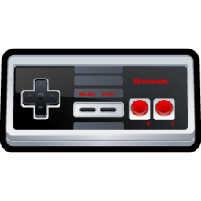

Your browser does not support the audio element.
Mute/Unmute
Nintendo Video Games Trivia
Seconds Remaining:
Mario, the famed video game plumber, was named after which person?
Mario Lopez
Mario Kondo, brother-in-law to the game's designer, Shigeru Miyamoto
Mario Segale, landlord of Nintendo's warehouse
Mario Grezzo, Chief Executive of Nintendo Creative Department
What is the best-selling Nintendo game of all time?
Duck Hunt
Super Mario Bros.
Mario Kart Wii
Wii Sports
Which of the following games did Mario creator Shigeru Miyamoto NOT create?
Donkey Kong
Kid Icarus
Excitebike
The Legend of Zelda
What was the first game with Princess Zelda as a playable character?
Zelda: Wand of Gamelon
The Legend of Zelda: Ocarina of Time
Super Smash Bros. Melee
Super Smash Bros. Brawl
What is the best-selling Nintendo handheld device of all time?
Nintendo Game Boy
Nintendo Game Boy Advance
Nintendo DS
Nintendo 3DS
What was the first Nintendo game to include a 'Save Game' feature?
Dragon Warrior
Final Fantasy
Metroid
The Legend of Zelda
What was the first Nintendo game to feature Mario in it?
Mario Bos.
Tennis
Donkey Kong
Wrecking Crew
The Mario Bros. antagonist, Bowser, is named after Nintendo's VP of Sales, Doug Bowser:
True
False
Nintendo's Headquarters is located in which country?
India
China
Japan
United States
Nintendo is the world's largest video game company by revenue:
True
False
Nintendo translates to:
'You only live once'
'Leave luck to heaven'
'Work to play'
'Continue playing'
Nintendo owns which MLB team?
Seattle Mariners
Minnesota Twins
Chicago White Sox
Colorado Rockies
